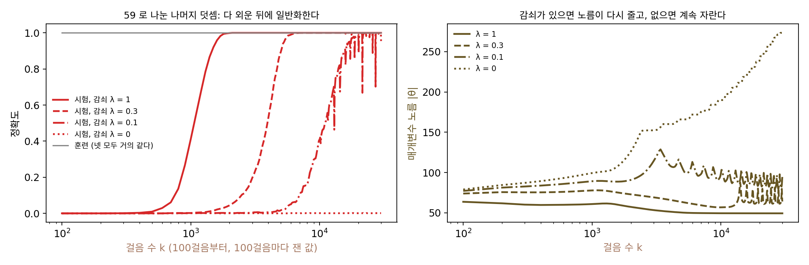

그로킹: 다 외운 뒤 한참 지나 규칙을 찾는다
이중 하강의 학습 시간 축은 「오래 학습할수록 모형이 실제로 쓰는 크기가 커진다」는 그림이었다. 거꾸로 생각해 볼 수도 있다. 학습 데이터를 이미 다 맞혀 손실이 0에 가까운데도 학습을 계속하면, 매개변수는 더 바뀔 것이 없을까? 기울기가 거의 0이면 경사하강은 멈춘다. 그런데 가중치 감쇠처럼 손실과 상관없이 매개변수를 줄이는 힘이 걸려 있으면 이야기가 달라질 것 같다.
역사: 휴가 동안 꺼지지 않은 학습
2022년 1월, 오픈AI의 앨리시아 파워(Alethea Power), 유리 부르다(Yuri Burda), 해리 에드워즈(Harri Edwards), 이고르 바부시킨(Igor Babuschkin), 그리고 베단트 미스라(Vedant Misra, 논문에는 구글 소속으로 적혔고 연구 당시에는 오픈AI에 있었다)는 「그로킹: 작은 알고리즘 데이터에서 과적합 너머의 일반화」를 아카이브에 올렸다. 그들은 「97로 나눈 나머지」 세계의 덧셈, 나눗셈 같은 연산표를 데이터로 삼았다. 예를 들어 a ÷ b (mod 97)의 표 칸 가운데 절반만 보여 주고, 층 2개짜리 작은 트랜스포머(너비 128, 임베딩을 뺀 매개변수 약 40만 개)에게 나머지 절반을 맞히게 했다. 학습 정확도는 1,000걸음이 안 되어 거의 100%가 되었지만, 처음 보는 칸의 정답률은 10만 걸음까지 거의 오르지 않다가 100만 걸음 가까이 가서야 100%에 닿았다. 논문의 첫 그림에 실린 이 실험은 가중치 감쇠 없이 Adam으로 학습한 것이다.
이 일을 처음 본 경위는 우연이었다고 전해진다. 2024년 『콴타 매거진』의 기사에 따르면, 보통은 과적합이 시작되면 학습을 멈추는데 팀원 한 사람이 휴가를 가면서 학습을 끄는 것을 잊었고, 돌아와 보니 신경망이 처음 보는 데이터도 맞히고 있었다. 기사는 파워가 2022년의 한 학회 발표에서 「그러다 어느 날 운이 좋았다. 운이 좋았다는 건 잊어버렸다는 뜻이다」라고 말했다고 전한다. 그로크(grok)는 공상과학 작가 로버트 하인라인이 1961년 소설 『낯선 땅 이방인(Stranger in a Strange Land)』에서 지어낸 말로, 무엇인가를 속속들이 이해해 그 일부가 된 듯한 상태를 가리킨다. 논문은 여러 처방을 견주면서, 가중치 감쇠를 거는 것이 일반화에 필요한 데이터의 양을 다른 처방 대부분의 절반 아래로 줄일 만큼 효과가 컸다고 적었다.
59로 나눈 나머지 덧셈을 직접 돌려 보기
원 실험을 작게 줄여 직접 돌려 보자. 과제는 (a + b) mod 59다. 가능한 쌍 59 × 59 = 3,481개 가운데 절반인 1,740개를 학습에, 나머지 1,741개를 시험에 쓴다. 모형은 숫자마다 학습으로 고치는 숫자 64개짜리 벡터(임베딩)를 하나씩 두고, 두 숫자의 임베딩을 이어 붙여 은닉층 128개(ReLU)를 지나 59개 답의 점수를 내는 작은 신경망이다(매개변수 27,899개). AdamW(학습률 3 × 10⁻³)로 학습 쌍 전부를 한 묶음으로 3만 걸음 학습하면서, 가중치 감쇠 세기 λ만 1, 0.3, 0.1, 0으로 바꿨다.
| 가중치 감쇠 λ | 훈련 정확도 99.9% 이상 | 시험 정확도 50% 이상 | 시험 정확도 99% 이상 | 3만 걸음 뒤 시험 정확도 |
|---|---|---|---|---|
| 1 | 100걸음 | 1,100걸음 | 1,800걸음 | 100% |
| 0.3 | 100걸음 | 4,000걸음 | 6,000걸음 | 100% |
| 0.1 | 100걸음 | 11,100걸음 | 19,900걸음 | 95.5% |
| 0 | 100걸음 | 닿지 않음 | 닿지 않음 | 0.1% |
네 모형 모두 100걸음 만에 학습 쌍을 다 맞힌다. 그때 처음 보는 쌍의 정답률은 0%로, 59개 가운데 아무거나 찍을 때의 1.7%보다도 낮다. 학습 쌍을 외우기만 했고 외운 칸 밖에서는 자신 있게 틀린다. 그 뒤로 훈련 정확도는 100%에 머무는데, 감쇠가 걸린 세 모형은 한참 뒤에 시험 정확도가 뛰어오른다. 감쇠를 1/3로 줄이면 99%에 닿는 걸음이 1,800에서 6,000으로, 다시 1/3로 줄이면 19,900으로 늘어난다. 감쇠가 없는 모형은 3만 걸음 동안 일반화하지 않는다. 감쇠 0.1인 모형은 99%에 닿은 뒤에도 시험 정확도가 66.8%까지 떨어졌다 올라오기를 되풀이해 3만 걸음째에는 95.5%였다. 이 실험에서는 감쇠가 약한 모형이 일반화도 늦고, 일반화한 뒤에도 덜 안정했다.
이렇게 학습 데이터를 다 맞힌 뒤에도 학습을 오래 계속하다가 한참 늦게 일반화가 일어나는 현상을 그로킹 (다 외운 뒤의 늦은 일반화 / grokking)이라 한다.

오른쪽 그림의 매개변수 노름이 실마리를 준다. 감쇠 세기 1인 모형의 노름은 처음 61.6에서 3만 걸음 뒤 49.4로 줄고, 감쇠가 없는 모형은 273.3까지 자란다. AdamW의 가중치 감쇠는 걸음마다 매개변수 θ를 손실의 기울기와 따로 (1 − ηλ)배로 줄인다.
학습 쌍을 다 맞힌 뒤에는 손실이 거의 0이라 Adam의 걸음이 손실을 더 줄일 일이 없다. 남는 힘은 감쇠뿐이다. 감쇠는 노름을 줄이되, 학습 쌍을 계속 맞히는 범위 안에서 줄인다. 학습 쌍을 맞히는 매개변수는 많다. 칸마다 따로 외우는 매개변수도 있고, 「두 수를 더해 59로 나눈 나머지」라는 규칙 하나로 맞히는 매개변수도 있다. 감쇠는 그 가운데 노름이 작은 쪽으로 매개변수를 천천히 끌고 가고, 규칙으로 맞히는 쪽이 그 끝에 있으면 어느 순간 처음 보는 칸까지 맞히게 된다. 끄는 빠르기는 걸음마다 곱해지는 1 − ηλ가 정한다. 이 빠르기가 표의 걸음 수와 어떻게 맞물리는지는 문제에서 셈해 본다. 노름이 작은 쪽으로 끌려간다는 이 설명은 실험에 맞는 설명 하나일 뿐이다. 왜 규칙 쪽의 노름이 더 작은지까지 이 실험이 보여 주지는 않는다.
ML에서: 가중치 감쇠가 그로킹을 앞당긴다
가중치 감쇠는 AdamW가 기울기와 따로 걸음마다 매개변수를 (1 − 학습률 × 감쇠)배로 줄이는 장치였다. 큰 모형 학습에서 감쇠를 0.1처럼 꽤 크게 두는 설정이 흔한데, 그로킹 실험은 그 감쇠가 학습 손실이 다 내려간 뒤에도 일을 한다는 것을 보여 준다. 학습 곡선이 평평해졌다고 학습을 멈추면, 감쇠가 일반화를 끌어올리기 전에 멈춘 것일 수 있다. 같은 모양은 학습 데이터 수에도 걸려 있다. 파워 팀은 학습에 보여 주는 칸의 비율이 작을수록 일반화에 필요한 걸음 수가 빠르게 늘어난다고 적었다. 그로킹을 일으킨 신경망이 무엇을 배웠는지 뜯어본 연구도 이어졌다. 2024년 『콴타 매거진』 기사에 소개된 닐 난다(Neel Nanda)의 분석에 따르면, 그가 오픈AI의 신경망을 더 단순하게 줄여 설계한 작은 트랜스포머는 나머지 덧셈을 숫자를 원 위의 자리로 바꿔 돌리는 방식(이산 푸리에 변환과 삼각함수 덧셈 공식)으로 풀고 있었다.
문제 9. 시계 덧셈 외우기
12시간 시계의 덧셈표(「9시에서 5시간 뒤는 2시」처럼, 시각과 지나는 시간이 각각 0~11)는 칸이 몇 개인가? 민준은 그 가운데 절반을 외웠고, 서연은 「더해서 12보다 크거나 같으면 12를 뺀다」는 규칙 하나를 익혔다. (가) 외우지 않은 칸을 민준이 찍어서 맞힐 확률은? (나) 둘이 머릿속에 들고 있는 것의 양을 견주어라. (다) 외운 칸마다 「기억 비용」을 물린다면 무슨 일이 생길까?

칸은 12 × 12 = 144개고, 저는 72칸을 외웠어요. 외운 칸에서는 서연이와 똑같이 100점이에요. 시험에 외운 칸만 나오면 차이가 없죠.

외우지 않은 72칸이 나오면요?

찍어야죠. 12개 가운데 하나니까 1/12 = 8.3%예요. 서연이는 규칙이 있으니까 100%고요. 아는 칸에서는 같은 점수인데 모르는 칸에서는 완전히 갈리네요.

둘이 들고 있는 것의 양은요? 그리고 외운 칸마다 비용을 물리면요?

민준이는 72칸, 나는 한 줄이에요. 칸마다 비용을 물리면 72칸을 들고 있는 쪽이 계속 손해라서, 외운 칸을 줄일 수 있는 다른 방법인 규칙을 찾을 이유가 생겨요. 아까 본 실험에서 가중치 감쇠가 하던 일이 그 비용이었네요.

시험 전날 기출문제 답만 외워 가면 변형 문제에서 다 틀리는 거랑 같네요. 외울 게 너무 많아서 지칠 때쯤에야 원리를 들여다보게 되는 것도요.
문제 10. 손실 0에서 출발한 매개변수 둘
매개변수 둘 w = (w₁, w₂)로 예측 w·x를 내는 모형에 학습 기록이 x = (1, 1), y = 2 하나뿐이다. 출발점 w = (3, −1)은 처음부터 훈련 손실이 0이다. 손실 ½(w·x − y)²에 학습률 η = 0.1로 경사하강을 하고, 가중치 감쇠 λw를 기울기에 더한다. 시험 입력 x′ = (2, 0)의 정답은 2다(정답 규칙을 (1, 1)로 정했다). (가) λ = 0이면 시험 예측은 어떻게 되는가? (나) λ = 0.01, 0.003일 때 시험 예측이 2의 0.05 안에 드는 걸음은? (다) 그동안 훈련 손실은?

손실이 처음부터 0이면 기울기도 0이니까 아무 일도 안 생기지 않아요? 감쇠를 걸어도 λ가 0.01이면 너무 작아서 거의 안 움직일 것 같아요.
(가)부터 확인하고, (나)는 직접 돌려 봐요.
(가)는 정말 2만 걸음 내내 (3, −1)이고 시험 예측은 6이에요. 정답 2에서 4만큼 틀린 채로 멈춰 있어요. (나)는 λ = 0.01에서 4,199걸음, 0.003에서 14,411걸음 만에 2의 0.05 안에 들어와요. 끝에는 (0.995, 0.995) 근처로 가요.

그런데 훈련 손실은 내내 5 × 10⁻⁵ 아래예요. 학습 기록은 처음부터 끝까지 맞히는데 시험 예측만 6에서 2로 천천히 내려와요. 손실로 보면 학습이 끝난 상태인데 매개변수는 계속 움직였어요.
(3, −1)을 x = (1, 1) 방향과 그에 수직인 (1, −1) 방향으로 쪼개 보세요. 감쇠는 어느 쪽을 줄이고, 손실은 어느 쪽을 지키죠?

(3, −1) = (1, 1) + 2 × (1, −1)이에요. (1, 1) 성분은 손실이 w·x = 2를 지키느라 붙들고, (1, −1) 성분은 손실과 상관이 없으니 감쇠만 받아 걸음마다 1 − ηλ = 0.999배가 돼요. 1/100로 줄려면 ln 100 / −ln 0.999 = 4,603걸음, λ = 0.003이면 15,348걸음. 걸음 수가 λ에 반비례하고, 실제로 잰 4,199와 14,411도 그 비율을 따라요. 손실이 신경 쓰지 않는 방향을 감쇠가 0으로 끌고 간 거예요. 최소 노름 해 (1, 1) 쪽으로요.

그로킹 표에서 감쇠를 1/3로 줄일 때마다 걸음이 3배씩 늘었던 게 이거였네요. 신경망에서도 학습 쌍을 맞히는 데 필요 없는 성분을 감쇠가 천천히 깎아 낸 거고요. 손실만 보고 학습이 끝났다고 판단하면 안 되겠어요.
문제 11. 감쇠를 열 배로 줄이면
59로 나눈 나머지 덧셈 실험에서 시험 정확도 99%에 닿은 걸음은 감쇠 λ = 1, 0.3, 0.1에서 1,800, 6,000, 19,900이었다. 학습률은 η = 3 × 10⁻³이다. (가) 걸음마다 매개변수에 곱해지는 1 − ηλ와, 매개변수가 감쇠만으로 1/100이 되는 걸음 수 ln 100/(ηλ)를 세 경우에 구하라. (나) 99%에 닿은 걸음 수와 견주면 무엇이 보이는가? (다) λ = 0인 모형이 3만 걸음 동안 일반화하지 못한 것을 어떻게 읽어야 하는가?
(가)는 λ = 1이면 1 − 0.003 = 0.997이고, ln 100/0.003 = 1,535걸음이요. 0.3이면 0.9991에 5,117걸음, 0.1이면 0.9997에 15,351걸음이에요. 실제 걸음 1,800, 6,000, 19,900과 자릿수까지 비슷해요.
비율로 보면 실제 걸음은 1 : 3.3 : 11.1이고, 1/λ는 1 : 3.3 : 10이야. 아까 매개변수 둘짜리 문제처럼 걸음 수가 1/(ηλ)에 비례해.
그럼 λ = 0이면 1/(ηλ)가 무한대니까, 영원히 일반화하지 못한다고 말해도 될까요?
그렇게 말하고 싶은데, 파워 팀의 원 실험은 감쇠 없는 Adam으로도 100만 걸음 가까이 가서 일반화했어요. 감쇠가 없어도 다른 무엇이 천천히 같은 일을 할 수 있다는 거예요. 우리 실험이 보여 준 건 3만 걸음 안에서는 안 됐다는 것까지예요. 매개변수 둘짜리 문제에서 감쇠가 없으면 영영 멈춘 건 그 모형이 경사하강밖에 없어서였고요.

그래요. 단서를 지키는 게 중요해요. 이 실험에서 말할 수 있는 건 「감쇠가 셀수록 일반화가 빨리 온다, 걸음 수는 대략 감쇠에 반비례한다」이고, 감쇠가 없을 때는 이 예산 안에서 오지 않았다는 데까지예요.

실험 보고서에 「안 됐다」 대신 「3만 걸음 안에서는 안 됐다」라고 써야 하는 이유네요. 예산이 끝나서 멈춘 걸 원리상 불가능하다고 쓰면 조교님한테 빨간 줄을 받겠어요.